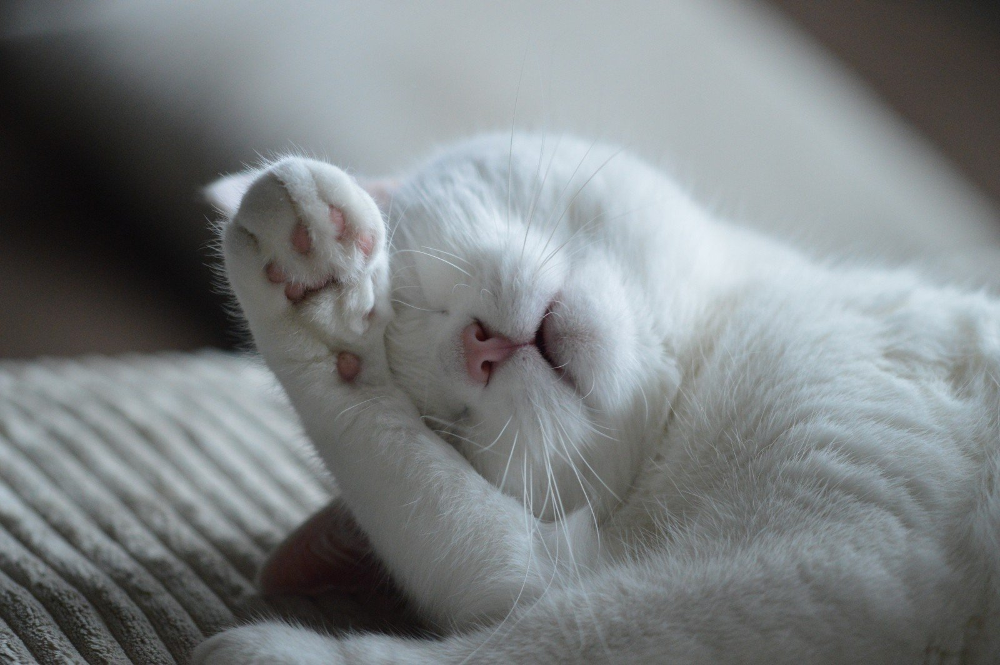

<div class="content">
  <div class="container-outer" fxLayout="row wrap">
    <div class="spacer" fxFlex="10%" fxHide.xs="true" fxHide.sm="true"></div>

    <mat-card class="welcome-card mat-elevation-z0" mat-elevation-z1 fxFlex="45%" fxFlex.sm="100%" fxFlex.xs="100%">
      <mat-card-header>
        <mat-card-title>A very warm welcome!</mat-card-title>
      </mat-card-header>
      
      <mat-card-content>
        <p>
          Wow! You want to get involved! That is amazing!
          <br><br>I saw a post recently.<br>
          <span id="quote"> "Give animals the care they need and the love they deserve." </span><br>
          That's what we are about. We love animals, we are passionate about helping them.
          We rescue them, have foster parents, find forever homes for our cats and dogs.
          We organise transport to other shelters or doctors runs. Pick them up from the roadside. Love on them.
          We make sure the rescued animals are well taken care of. We give them a future in savety and dignity. <br>
          And without our volunteers and donors our work wouldn't be possible.
          <br><br>
          Please, take a couple of minutes and let us know, who you are and why rescuing animals is important for you.
          <br><br>
          If you have questions, please don't hesitate to contact us. Welcome to the family!

        </p>
      </mat-card-content>
      <mat-card-actions>
        <a routerLink="/vol-application">
          <button mat-raised-button color="accent">I want to get involved!</button>
        </a>
      </mat-card-actions>
    </mat-card>
    <!-- ****************    -->
    <div class="side-outer" fxFlex="30%" fxFlex.sm="100%" fxFlex.xs="100%">
      <div class="side-inner" fxLayout="column">
        <mat-card fxFlex="35%" fxFlex.sm="100%" fxFlex.xs="100%">
          <mat-card-header>
            <mat-card-title class="side-title">If I had a wish... </mat-card-title>
          </mat-card-header>
          <mat-card-content>
            <br>
            <section>
              We don't own a building, we are an animal rescue and not a shelter. The heart of the rescue are our
              amazing
              volunteers, and here I want to mention especially our fosters.
              <strong>Fosters </strong> take animals in for a limited time. In the beginning, when we pick the pets up,
              they can be sick or at
              least very weak.
              They need extra care. That is a lot of work! A lot!
              The animals need medical checkups, several rounds of shots, little ones need to be fed every 2 or 3 hours
              and so on, and they are
              not potty-trained. So I want to thank our amazing community of volunteers for all their love, hard work
              and sacrifices. <br>
              Thank you and bless you!<br><br>
              But back to my open wish.... <br><br>
              We need more volunteers! And a hint - Your family needs to be on board, too!
              So if your heart is breaking over the straying animals in the streets and you live in or around the
              Salinas,CA
              area give us a <span matTooltip="Call us under: 831-444-5822">
call! </span><br><br>
              You're more than welcome to get involved!
            </section>
            <br>
          </mat-card-content>

        </mat-card>
        <mat-card fxFlex="30%" fxFlex.sm="100%" fxFlex.xs="100%">
          <mat-card-header>
            <mat-card-title class="side-title">Volunteer Opportunities</mat-card-title>
          </mat-card-header>
          <mat-card-content>
            <ul>
              <li>Fostering Cats or Dogs</li>
              <li>Fundraising</li>
              <li>Transport</li>
              <li>Administration</li>
              <li>Media</li>
            </ul>
          </mat-card-content>
        </mat-card>

      </div>
    </div>
    <!-----    ******************* -->
  </div>
</div>